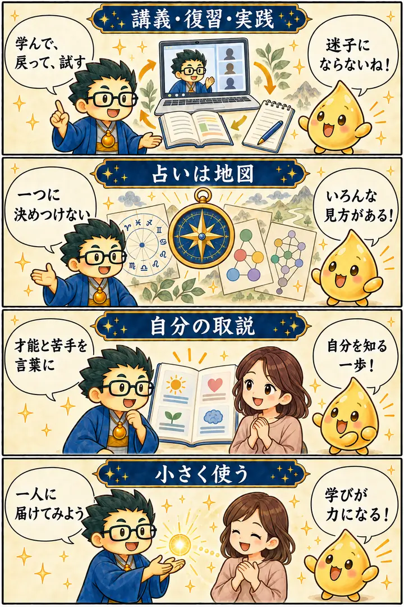

第3期 Zoom講座・第1回
占いの基礎と全体像
この回の要約
占いは人を決めつける答えではなく、自分と相手を理解するための地図。
第3期の学び方と教材を確認し、さまざまな占術をどう学び、どう実践へつなげるかを考えます。後半では命式から自分の持ち味を言葉にし、「自分の取扱説明書」を作ることへ発展します。AIは整理と表現の補助として使い、判断は人が担います。
4コマ漫画でつかむ

タイムスタンプ
時間を押すと、上の動画がその場面から再生されます。
質疑応答
※ 書き起こしをもとに学習用に整理・再構成しています。受講者の吹き出しは逐語引用ではありません。
学びは「講義・復習・実践」を行き来する
01:47から見る ▶扱う資料が多いと、何から始めればいいか迷います。
第3期の内容を順番に学び、分からないところは資料へ戻ってください。覚え切ることより、実際に使いながら理解を深めることが大切です。
持ち帰り：今週の講義から一つだけテーマを選び、「見る → 資料で確かめる → 誰かに説明する」を試す。
学習ツールは、知識を使いやすくする入口
16:07から見る ▶資料を読んだあと、質問したり整理したりもできるんですね。
学習ページやAIの道具を使うと、知りたいところへ戻りやすくなります。ただし、出てきた答えは元の資料と照らして確認しましょう。
講義では学習ポータルやNotebookLMなどの活用例が紹介されました。ツールの機能や出力は変わるため、内容を自分で確かめる姿勢が必要です。
持ち帰り：AIの説明で新しく知ったことを一つ選び、講義動画や資料の該当箇所を探す。
ヒヤリハットを、小さな学びに変える
30:42から見る ▶大きな出来事になる前の、小さな違和感も大事なんですね。
起きたことを振り返ると、次に何を変えられるかが見えてきます。占いの見方も、現実の行動を考える手がかりにしてください。
ヒヤリハットは講義中のたとえです。占いで事故を予知・防止できると断定するものではありません。
持ち帰り：最近の「少し困ったこと」を一つ挙げ、次に試せる行動を一つ書く。
命式から、自分の強みを言葉にする
48:11から見る ▶同じ方法で学んでも、得意なことは人によって違うんですね。
命式を一つの手がかりに、自分が自然にできることを探してみましょう。結果を決めつけず、これまでの経験と照らしてみてください。
持ち帰り：占いの結果と実体験が重なる点、重ならない点を一つずつ書く。
「自分の取扱説明書」を作る
59:28から見る ▶自分のことを相手へ説明できる資料になりそうです。
得意なことだけでなく、疲れやすい場面や助けてほしいことも書くと、自分に合う使い方が見えてきます。
持ち帰り：「力が出る条件」「苦手な状況」「助けてほしいこと」を各一行でまとめる。
覚えておきたいこと
- 第3期は、講義を聞くだけでなく、資料へ戻り、実例で試しながら学ぶ。
- 占術は本人を固定するラベルではなく、理解を広げる地図として使う。
- 小さな違和感や実際の経験を振り返り、次の行動に結びつける。
- 命式の読みと、自分の体験や本人の言葉を照らし合わせる。
- AIの出力は資料と照合し、最終的な判断は人が行う。
復習ポイント
講義内の占術上の説明・時代の読み・象徴的な解釈は、講師の見立てです。客観的な事実や将来を保証するものではありません。